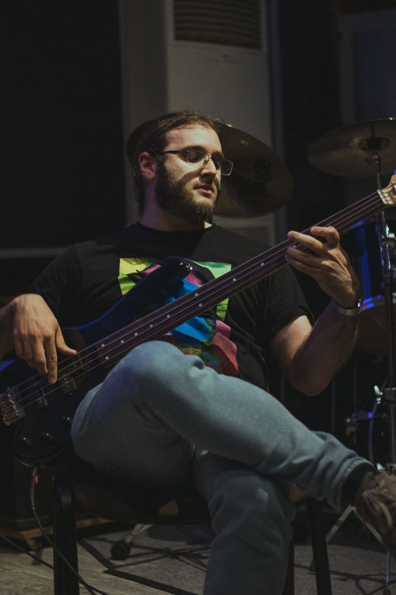

I am an avid listener of music of all genres, with a sweet spot for any kind of progressive/avant-garde/experimental music.
I have been playing electric bass since around 2012, mostly self-taught, often with consistently okay-but-less-than-great results.
I enjoy learning songs that I like, occasionally writing music of my own, and studying different playing styles.
I have some videos of me playing on my YouTube channel.
Currently I spend most of my free time on the instrument learning how to improvise over jazz standards.
I am the bass player for progressive rock band PROMETHEO, formed in 2008 and currently in the process of recording the second part of a historical concept album about the Holy Roman Emperor Frederick II.
I also play bass in the old-school tech-thrash metal outfit Oracle, founded (well before my birth!) in 1989. Between 2021-2023, I played in the alternative rock band Hollow Echoes.
In parallel with my activity as a bassist, I enjoy doing sound experiments with electric guitars and synthetizers, using effect pedals, samples, loops and drones. Sometimes I release the outcome of these experiments, taking inspiration from post-rock, ambient and contemporary classical music, under the project MEMORIA.
[Playing with Prometheo during the traditional concert at the Department of Physics in Bari, in 2023. Photo by M. Cecca.]
Released music (always self-released, almost always self-produced)
Most of the following music is available on major streaming services (Spotify, YouTube, Apple, Amazon etc.) I try to have it always on Bandcamp because it's a much nicer platform.
- Francesca Celiberto, Non sei mica De Andrè (EP, 2021); bass on "Sentimentale"
- Prometheo, Quello che rimane (2021); bass on "Colma di doni"
- Prometheo, Di ieri e d'oggi (Vecchio amico) (single, 2021); bass
- Memoria, Sounds from the Wasteland (2021); all instruments
- Memoria, Loss (2022); all instruments
- Hollow Echoes, Hollow Echoes (EP, 2022); bass
- Hollow Echoes, Toxic (single, 2023); bass
- Prometheo, Stupor Mundi Vol. 1 (2023); bass, lead synth on "Lujarà"
- Memoria, Solipsism (single, 2023); Korg MS-20 Mini synth
- Memoria/Eavesdropping, mao feng (毛峰) (EP, 2024); various instruments
Music gear
I currently own a six-string bass custom-made by my friend Nico at Nile Guitars by restyling an ultra-cheap instrument by Harley Benton, a Squier Jazz Bass Classic Vibe '60s (which sounds beautifully), and a de-fretted Yamaha RBX 170 (pictured above), usually played through an Ampeg PF350 Portaflex head. I also own a Cort Zenox electric guitar that I play through a small Laney Cub 8 tube amp, an Alvarez acoustic, and Korg Monologue and Korg Volca Bass synths, as well as a variety of (mostly cheap) effect pedals. Most of the music I record relies on this minimal setup, a microphone and a Focusrite Scarlett 2i2 USB audio interface.Recently listened and all-time favorites
I keep a tentative record of the music I own and listen to on rateyourmusic.com. Some of my all-time favorite albums are in the following, very incomplete list:- Black Sabbath, Master of Reality (1971)
- Genesis, Selling England by the Pound (1973)
- Godspeed You! Black Emperor, Lift Your Skinny Fists Like Antennas To Heaven (2000)
- King Crimson, In the Court of the Crimson King (1969)
- Natural Snow Buildings, The Winter Ray (2004)
- Neutral Milk Hotel, In the Aeroplane Over the Sea (1998)
- Opeth, Blackwater Park (2001)
- Phideaux, Doomsday Afternoon (2007)
- Porcupine Tree, Fear of a Blank Planet (2007)
- Swans, To Be Kind (2014)